Calculus I — Rates and accumulation
Limits, derivatives and integrals. This guide contains 77 chapter-level worked lessons, review questions, answers, and linked illustrations.
Contents — select a chapter
Continuity and limits
A continuous function has matching left/right limits equal to its value.
lim x→2 (x²+1)=5.
- Polynomials are continuous
- Direct substitution: 4+1=5.
Find lim x→4 of (3x−2).
Hint: Substitute four.
Show answer and verify
10
Check the units, inputs and intermediate steps. Different solution methods may be valid.
Derivative from first principles
f′(x)=lim h→0 [f(x+h)−f(x)]/h measures instantaneous change.
For f(x)=x², difference quotient simplifies to 2x+h, limit 2x.
- Expand (x+h)²
- Cancel x²
- Divide by h
- Let h→0.
For f(x)=x², find f′(5).
Hint: Derivative is 2x.
Show answer and verify
10
Check the units, inputs and intermediate steps. Different solution methods may be valid.
Power rule
d/dx[x^n]=n x^(n−1) for real n where defined.
d(x⁴)/dx=4x³.
- Multiply by exponent 4
- Reduce exponent one.
Find derivative of x^5 at x=2.
Hint: 5×2⁴.
Show answer and verify
80
Check the units, inputs and intermediate steps. Different solution methods may be valid.
Product rule
d(uv)/dx=u′v+uv′; both factors change.
d[x² sin x]/dx=2x sin x+x² cos x.
- Differentiate first × second
- Add first × derivative of second.
For f=x²·x³, evaluate f′(2).
Hint: Simplify to x^5.
Show answer and verify
80
Check the units, inputs and intermediate steps. Different solution methods may be valid.
Quotient rule
d(u/v)/dx=(u′v−uv′)/v² for v≠0.
d[(x²+1)/x]/dx=1−1/x².
- Rewrite x+1/x
- Differentiate termwise.
Derivative of 1/x at x=2?
Hint: −1/x².
Show answer and verify
-0.25
Check the units, inputs and intermediate steps. Different solution methods may be valid.
Chain rule
For composition f(g(x)), derivative = f′(g(x))g′(x).
d[(3x+1)²]/dx=6(3x+1).
- Outer derivative 2(3x+1)
- Inner derivative 3
- Multiply.
Derivative of (2x+1)^3 at x=1?
Hint: 3(2x+1)²·2.
Show answer and verify
54
Check the units, inputs and intermediate steps. Different solution methods may be valid.
Trigonometric derivatives
In radians, d(sin x)/dx=cos x and d(cos x)/dx=−sin x.
d[sin x]/dx at 0 = cos0 = 1.
- Differentiate sine
- Evaluate cosine zero.
Find d[cos x]/dx at x=pi/2 in RAD mode.
Hint: Derivative −sin x.
Show answer and verify
-1
Check the units, inputs and intermediate steps. Different solution methods may be valid.
Critical points
Local extrema may occur where f′=0 or derivative is undefined.
For f(x)=x²−6x+4, f′=2x−6=0 at x=3.
- Differentiate
- Solve first derivative zero.
Find x of minimum for f=x²−8x+2.
Hint: Derivative 2x−8=0.
Show answer and verify
4
Check the units, inputs and intermediate steps. Different solution methods may be valid.
Related rates
Differentiate an equation in time; use chain rule and known rates.
If A=πr², dA/dt=2πr dr/dt.
- Differentiate both sides
- Substitute known r and dr/dt.
If s=t², what is ds/dt at t=4?
Hint: Derivative 2t.
Show answer and verify
8
Check the units, inputs and intermediate steps. Different solution methods may be valid.
Definite integration
∫_a^b f(x)dx is signed accumulated area; for powers use antiderivatives.
∫₀² x dx = [x²/2]₀²=2.
- Find antiderivative x²/2
- Evaluate endpoints
- Subtract.
Integrate x^2 from 0 to 3.
Hint: x³/3 from zero to three.
Show answer and verify
9
Check the units, inputs and intermediate steps. Different solution methods may be valid.
Fundamental theorem
If F′=f, ∫_a^b f(x)dx=F(b)−F(a).
∫₁³ 2x dx=[x²]₁³=9−1=8.
- Find antiderivative x²
- Subtract endpoints.
Integrate 2x+1 from 0 to 2.
Hint: Antiderivative x²+x.
Show answer and verify
6
Check the units, inputs and intermediate steps. Different solution methods may be valid.
Limit laws
Limit laws: Analyze what a function approaches as x tends to a value, independent of the actual value at that point. Numerical values suggest a limit but do not constitute proof.
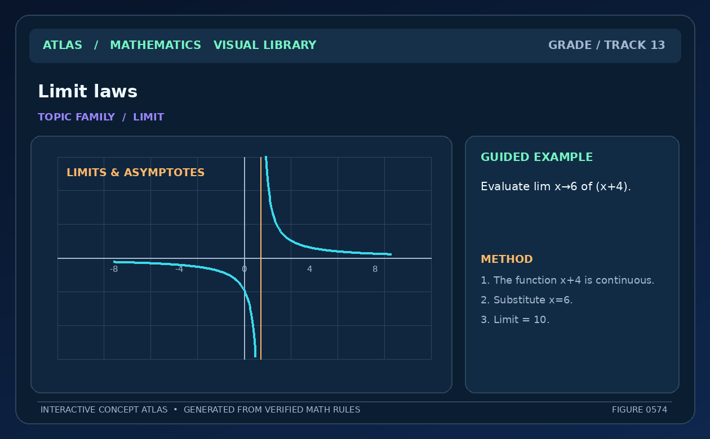
Evaluate lim x→6 of (x+4).
- The function x+4 is continuous.
- Substitute x=6.
- Limit = 10.
Find lim x→3 of (3x+6).
Hint: Polynomials are continuous at finite inputs.
Show answer and verify
15
Check the units, inputs and intermediate steps. Different solution methods may be valid.
One-sided limits
One-sided limits: Analyze what a function approaches as x tends to a value, independent of the actual value at that point. Numerical values suggest a limit but do not constitute proof.
Evaluate lim x→7 of (x+11).
- The function x+11 is continuous.
- Substitute x=7.
- Limit = 18.
Find lim x→4 of (3x+7).
Hint: Polynomials are continuous at finite inputs.
Show answer and verify
19
Check the units, inputs and intermediate steps. Different solution methods may be valid.
Two-sided limits
Two-sided limits: Analyze what a function approaches as x tends to a value, independent of the actual value at that point. Numerical values suggest a limit but do not constitute proof.
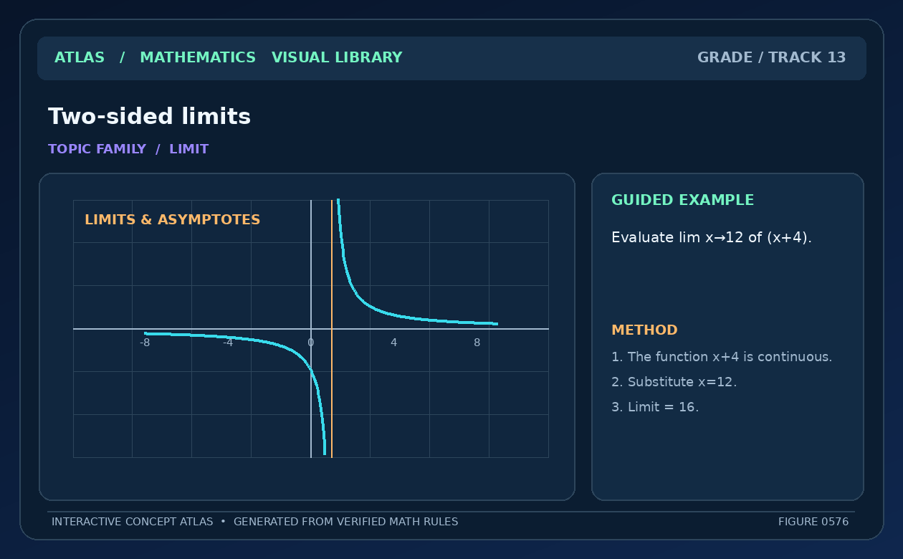
Evaluate lim x→12 of (x+4).
- The function x+4 is continuous.
- Substitute x=12.
- Limit = 16.
Find lim x→2 of (3x+12).
Hint: Polynomials are continuous at finite inputs.
Show answer and verify
18
Check the units, inputs and intermediate steps. Different solution methods may be valid.
Removable discontinuities
Removable discontinuities: Analyze what a function approaches as x tends to a value, independent of the actual value at that point. Numerical values suggest a limit but do not constitute proof.
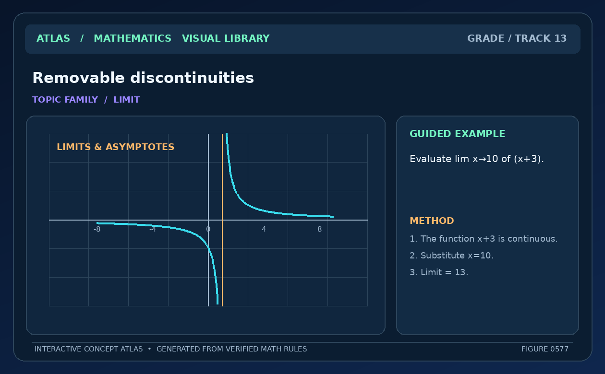
Evaluate lim x→10 of (x+3).
- The function x+3 is continuous.
- Substitute x=10.
- Limit = 13.
Find lim x→4 of (3x+10).
Hint: Polynomials are continuous at finite inputs.
Show answer and verify
22
Check the units, inputs and intermediate steps. Different solution methods may be valid.
Jump discontinuities
Jump discontinuities: Analyze what a function approaches as x tends to a value, independent of the actual value at that point. Numerical values suggest a limit but do not constitute proof.
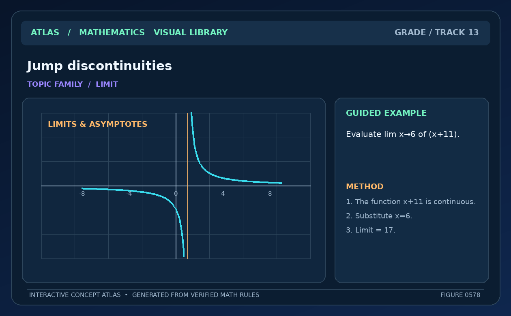
Evaluate lim x→6 of (x+11).
- The function x+11 is continuous.
- Substitute x=6.
- Limit = 17.
Find lim x→4 of (3x+6).
Hint: Polynomials are continuous at finite inputs.
Show answer and verify
18
Check the units, inputs and intermediate steps. Different solution methods may be valid.
Infinite discontinuities
Infinite discontinuities: Analyze what a function approaches as x tends to a value, independent of the actual value at that point. Numerical values suggest a limit but do not constitute proof.
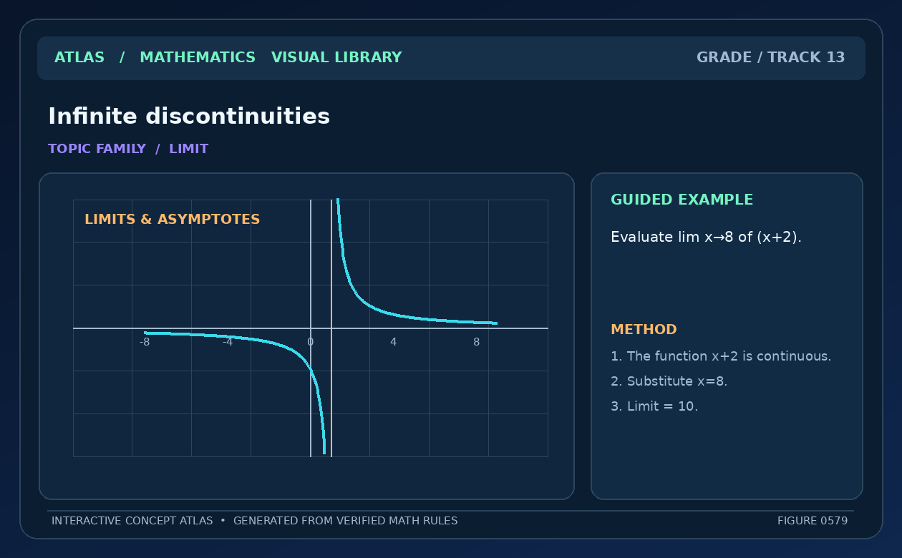
Evaluate lim x→8 of (x+2).
- The function x+2 is continuous.
- Substitute x=8.
- Limit = 10.
Find lim x→7 of (3x+8).
Hint: Polynomials are continuous at finite inputs.
Show answer and verify
29
Check the units, inputs and intermediate steps. Different solution methods may be valid.
Limits at infinity
Limits at infinity: Analyze what a function approaches as x tends to a value, independent of the actual value at that point. Numerical values suggest a limit but do not constitute proof.
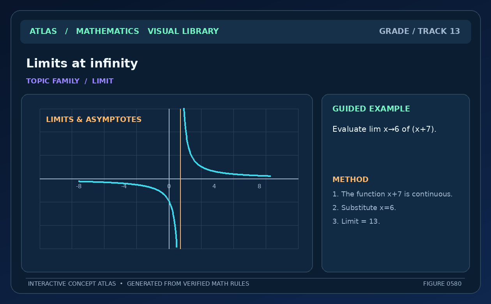
Evaluate lim x→6 of (x+7).
- The function x+7 is continuous.
- Substitute x=6.
- Limit = 13.
Find lim x→6 of (3x+6).
Hint: Polynomials are continuous at finite inputs.
Show answer and verify
24
Check the units, inputs and intermediate steps. Different solution methods may be valid.
Squeeze theorem
Squeeze theorem: Analyze what a function approaches as x tends to a value, independent of the actual value at that point. Numerical values suggest a limit but do not constitute proof.
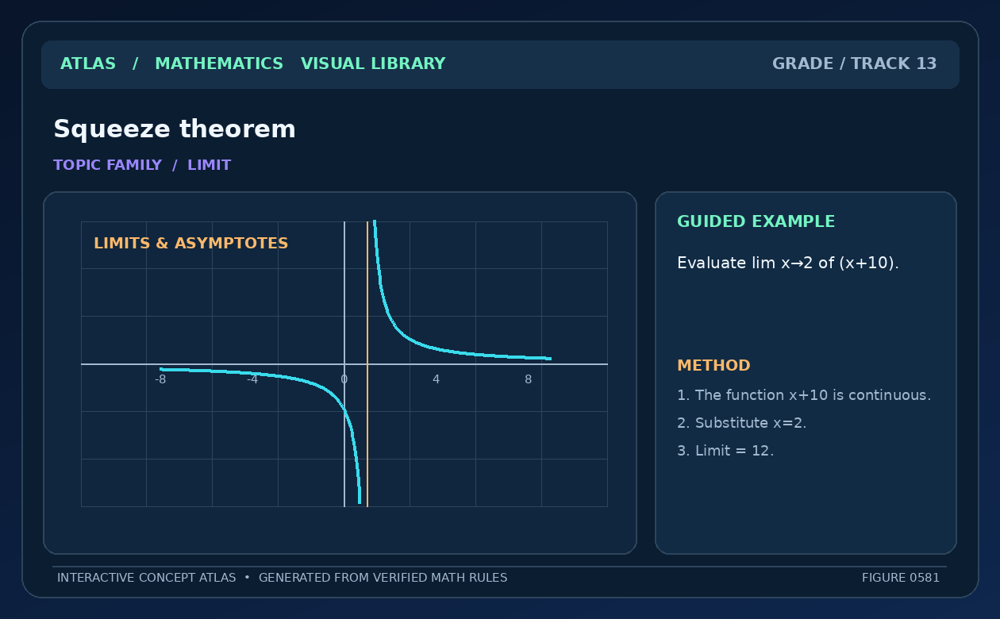
Evaluate lim x→2 of (x+10).
- The function x+10 is continuous.
- Substitute x=2.
- Limit = 12.
Find lim x→4 of (3x+2).
Hint: Polynomials are continuous at finite inputs.
Show answer and verify
14
Check the units, inputs and intermediate steps. Different solution methods may be valid.
Trigonometric limits
Trigonometric limits: Analyze what a function approaches as x tends to a value, independent of the actual value at that point. Numerical values suggest a limit but do not constitute proof.
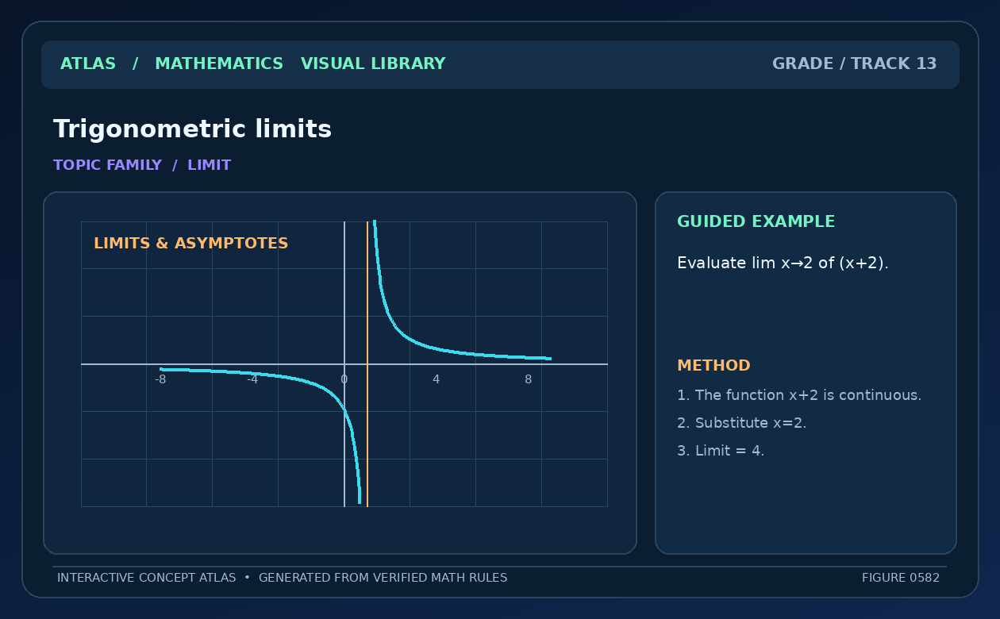
Evaluate lim x→2 of (x+2).
- The function x+2 is continuous.
- Substitute x=2.
- Limit = 4.
Find lim x→2 of (3x+2).
Hint: Polynomials are continuous at finite inputs.
Show answer and verify
8
Check the units, inputs and intermediate steps. Different solution methods may be valid.
Continuity on intervals
Continuity on intervals: Analyze what a function approaches as x tends to a value, independent of the actual value at that point. Numerical values suggest a limit but do not constitute proof.
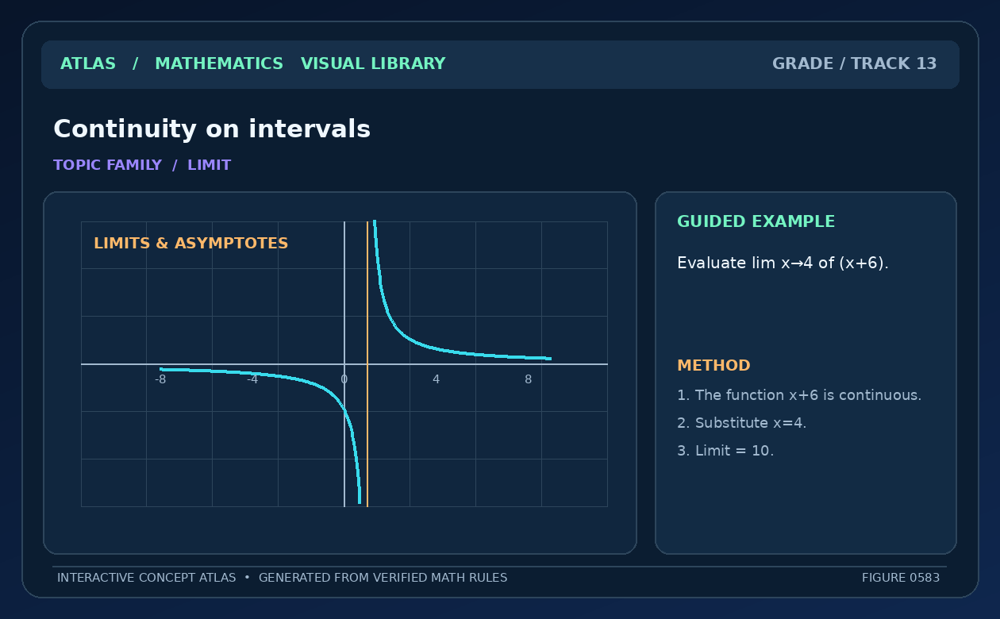
Evaluate lim x→4 of (x+6).
- The function x+6 is continuous.
- Substitute x=4.
- Limit = 10.
Find lim x→7 of (3x+4).
Hint: Polynomials are continuous at finite inputs.
Show answer and verify
25
Check the units, inputs and intermediate steps. Different solution methods may be valid.
Intermediate value theorem
Intermediate value theorem: Analyze what a function approaches as x tends to a value, independent of the actual value at that point. Numerical values suggest a limit but do not constitute proof.
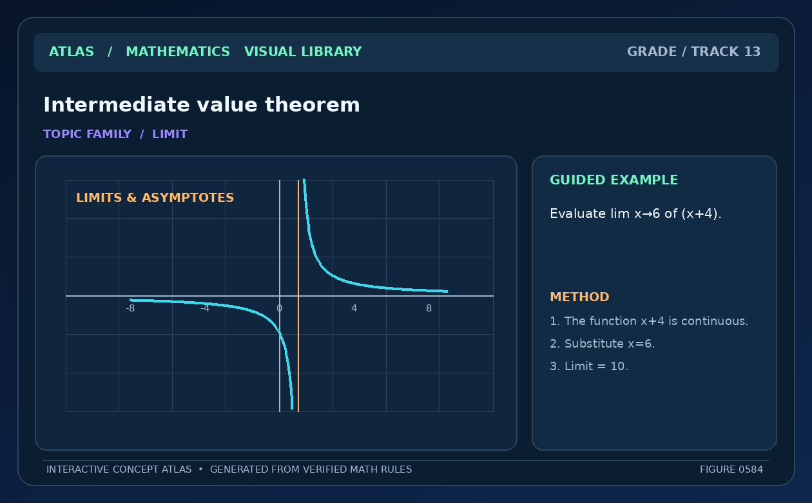
Evaluate lim x→6 of (x+4).
- The function x+4 is continuous.
- Substitute x=6.
- Limit = 10.
Find lim x→2 of (3x+6).
Hint: Polynomials are continuous at finite inputs.
Show answer and verify
12
Check the units, inputs and intermediate steps. Different solution methods may be valid.
Epsilon-delta intuition
Epsilon-delta intuition: Analyze what a function approaches as x tends to a value, independent of the actual value at that point. Numerical values suggest a limit but do not constitute proof.
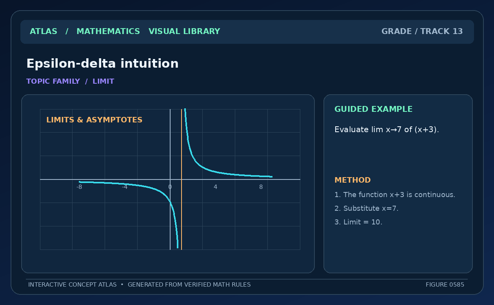
Evaluate lim x→7 of (x+3).
- The function x+3 is continuous.
- Substitute x=7.
- Limit = 10.
Find lim x→2 of (3x+7).
Hint: Polynomials are continuous at finite inputs.
Show answer and verify
13
Check the units, inputs and intermediate steps. Different solution methods may be valid.
Limit indeterminate forms
Limit indeterminate forms: Analyze what a function approaches as x tends to a value, independent of the actual value at that point. Numerical values suggest a limit but do not constitute proof.
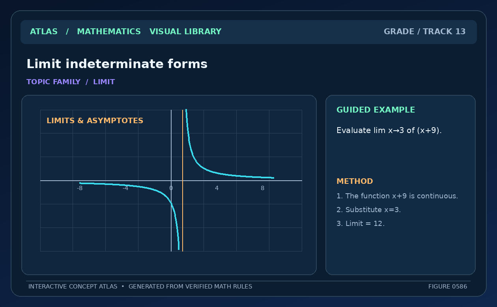
Evaluate lim x→3 of (x+9).
- The function x+9 is continuous.
- Substitute x=3.
- Limit = 12.
Find lim x→4 of (3x+3).
Hint: Polynomials are continuous at finite inputs.
Show answer and verify
15
Check the units, inputs and intermediate steps. Different solution methods may be valid.
Definition of derivative
Definition of derivative: Differentiate to find instantaneous rate of change and tangent-line slope. Check the applicable product, quotient, power and chain rules.
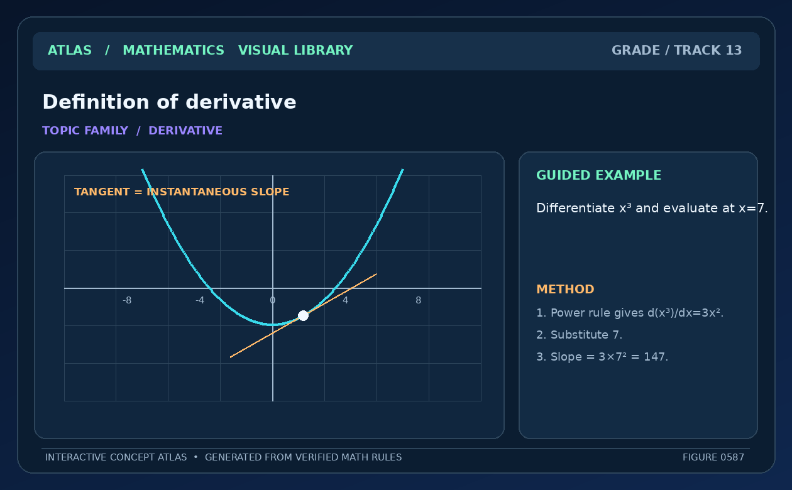
Differentiate x³ and evaluate at x=7.
- Power rule gives d(x³)/dx=3x².
- Substitute 7.
- Slope = 3×7² = 147.
Find derivative of x² at x=3.
Hint: Differentiate first: 2x.
Show answer and verify
6
Check the units, inputs and intermediate steps. Different solution methods may be valid.
Derivative as tangent slope
Derivative as tangent slope: Differentiate to find instantaneous rate of change and tangent-line slope. Check the applicable product, quotient, power and chain rules.
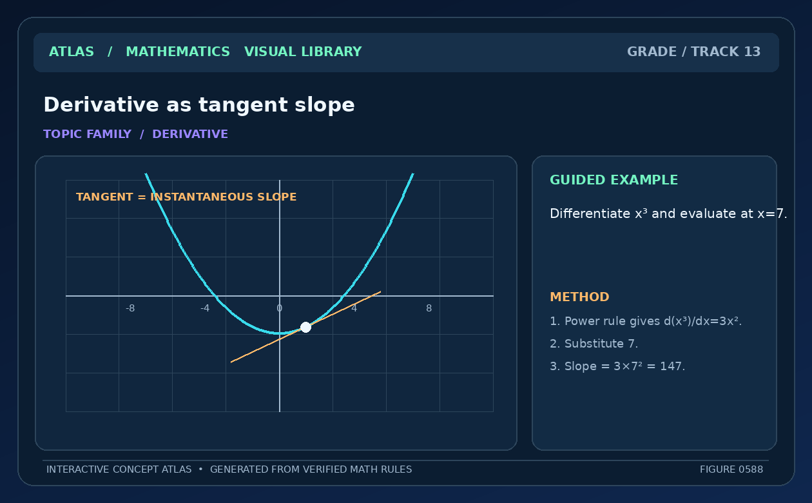
Differentiate x³ and evaluate at x=7.
- Power rule gives d(x³)/dx=3x².
- Substitute 7.
- Slope = 3×7² = 147.
Find derivative of x² at x=3.
Hint: Differentiate first: 2x.
Show answer and verify
6
Check the units, inputs and intermediate steps. Different solution methods may be valid.
Differentiability and continuity
Differentiability and continuity: Differentiate to find instantaneous rate of change and tangent-line slope. Check the applicable product, quotient, power and chain rules.
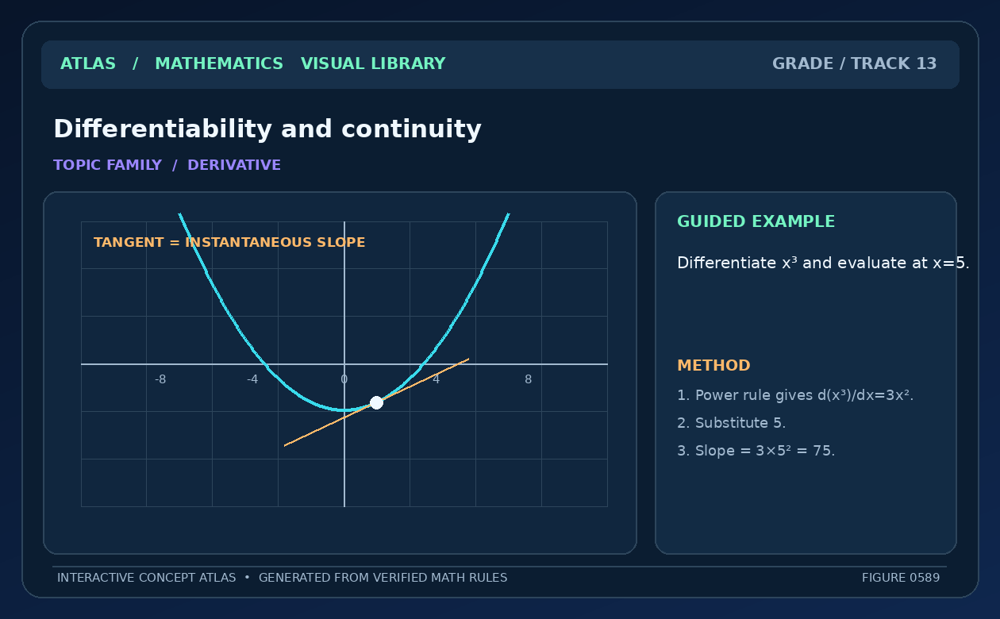
Differentiate x³ and evaluate at x=5.
- Power rule gives d(x³)/dx=3x².
- Substitute 5.
- Slope = 3×5² = 75.
Find derivative of x² at x=6.
Hint: Differentiate first: 2x.
Show answer and verify
12
Check the units, inputs and intermediate steps. Different solution methods may be valid.
Power rule
Power rule: Differentiate to find instantaneous rate of change and tangent-line slope. Check the applicable product, quotient, power and chain rules.
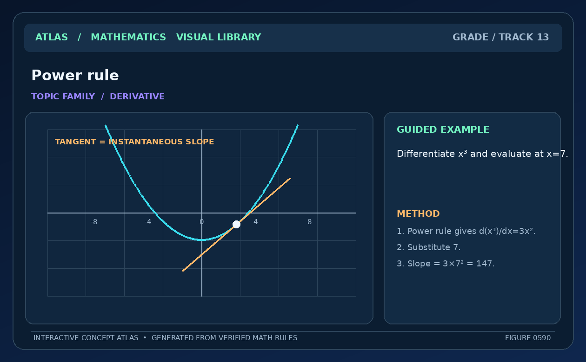
Differentiate x³ and evaluate at x=7.
- Power rule gives d(x³)/dx=3x².
- Substitute 7.
- Slope = 3×7² = 147.
Find derivative of x² at x=8.
Hint: Differentiate first: 2x.
Show answer and verify
16
Check the units, inputs and intermediate steps. Different solution methods may be valid.
Sum and difference rules
Sum and difference rules: Differentiate to find instantaneous rate of change and tangent-line slope. Check the applicable product, quotient, power and chain rules.
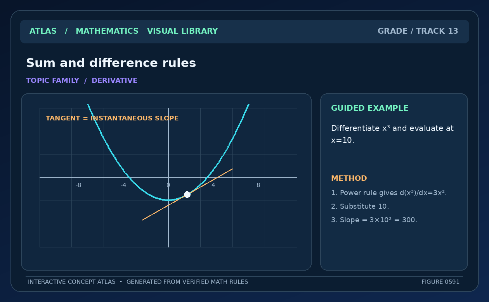
Differentiate x³ and evaluate at x=10.
- Power rule gives d(x³)/dx=3x².
- Substitute 10.
- Slope = 3×10² = 300.
Find derivative of x² at x=4.
Hint: Differentiate first: 2x.
Show answer and verify
8
Check the units, inputs and intermediate steps. Different solution methods may be valid.
Product rule
Product rule: Differentiate to find instantaneous rate of change and tangent-line slope. Check the applicable product, quotient, power and chain rules.
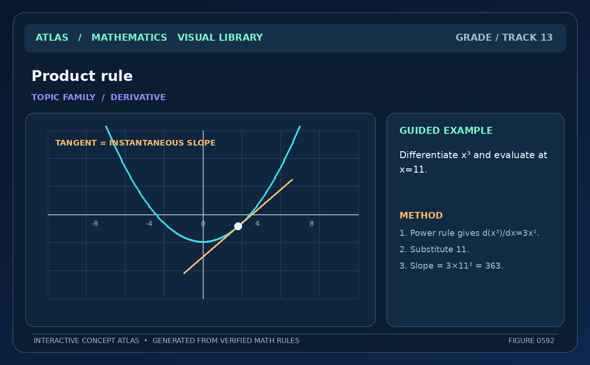
Differentiate x³ and evaluate at x=11.
- Power rule gives d(x³)/dx=3x².
- Substitute 11.
- Slope = 3×11² = 363.
Find derivative of x² at x=10.
Hint: Differentiate first: 2x.
Show answer and verify
20
Check the units, inputs and intermediate steps. Different solution methods may be valid.
Quotient rule
Quotient rule: Differentiate to find instantaneous rate of change and tangent-line slope. Check the applicable product, quotient, power and chain rules.
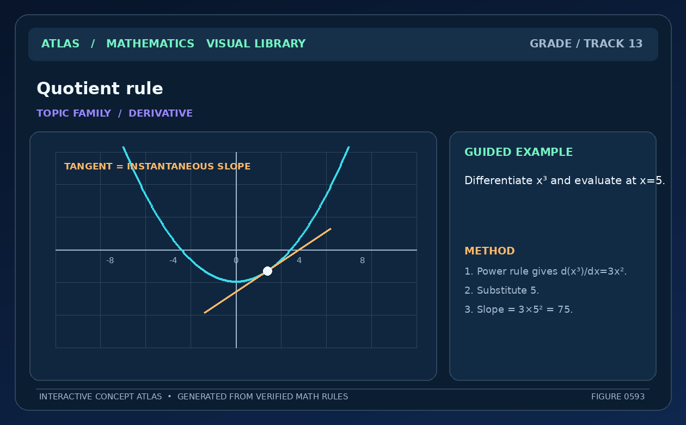
Differentiate x³ and evaluate at x=5.
- Power rule gives d(x³)/dx=3x².
- Substitute 5.
- Slope = 3×5² = 75.
Find derivative of x² at x=6.
Hint: Differentiate first: 2x.
Show answer and verify
12
Check the units, inputs and intermediate steps. Different solution methods may be valid.
Chain rule
Chain rule: Differentiate to find instantaneous rate of change and tangent-line slope. Check the applicable product, quotient, power and chain rules.
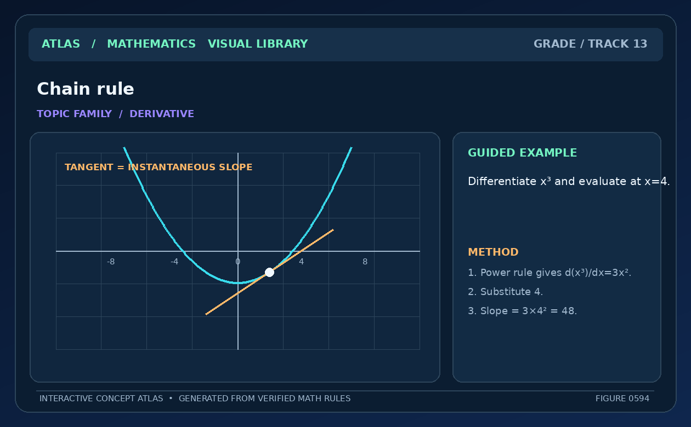
Differentiate x³ and evaluate at x=4.
- Power rule gives d(x³)/dx=3x².
- Substitute 4.
- Slope = 3×4² = 48.
Find derivative of x² at x=10.
Hint: Differentiate first: 2x.
Show answer and verify
20
Check the units, inputs and intermediate steps. Different solution methods may be valid.
Derivatives of sine and cosine
Derivatives of sine and cosine: Differentiate to find instantaneous rate of change and tangent-line slope. Check the applicable product, quotient, power and chain rules.
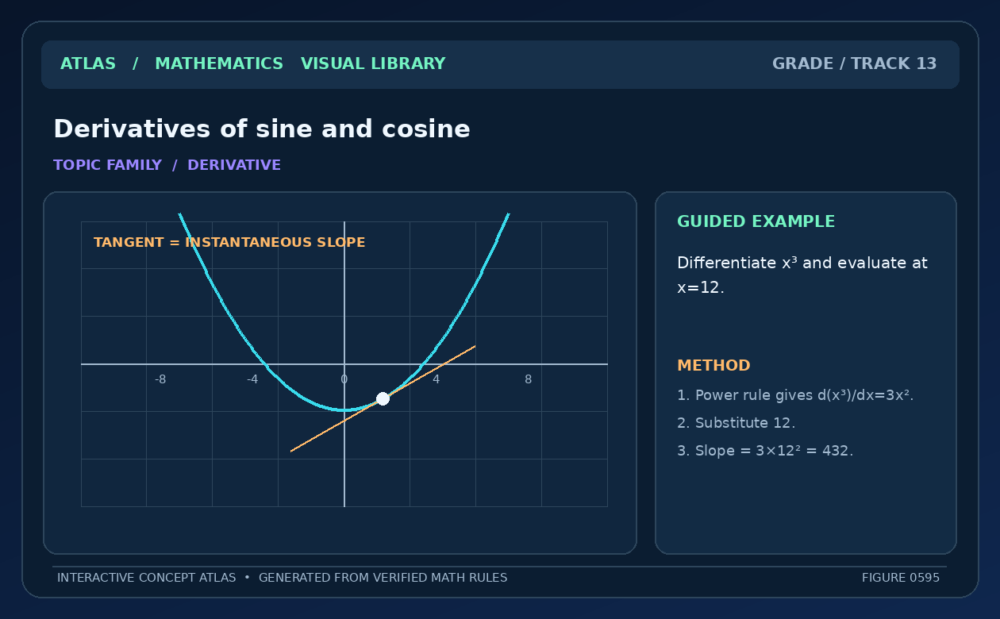
Differentiate x³ and evaluate at x=12.
- Power rule gives d(x³)/dx=3x².
- Substitute 12.
- Slope = 3×12² = 432.
Find derivative of x² at x=10.
Hint: Differentiate first: 2x.
Show answer and verify
20
Check the units, inputs and intermediate steps. Different solution methods may be valid.
Derivatives of tangent
Derivatives of tangent: Differentiate to find instantaneous rate of change and tangent-line slope. Check the applicable product, quotient, power and chain rules.
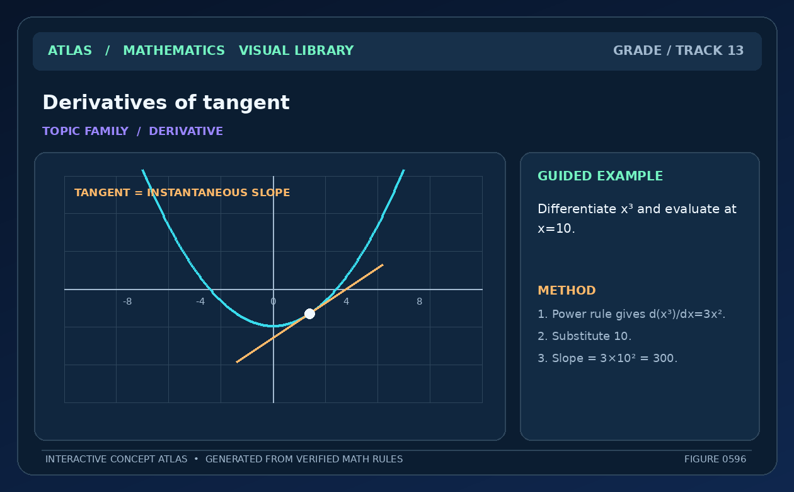
Differentiate x³ and evaluate at x=10.
- Power rule gives d(x³)/dx=3x².
- Substitute 10.
- Slope = 3×10² = 300.
Find derivative of x² at x=4.
Hint: Differentiate first: 2x.
Show answer and verify
8
Check the units, inputs and intermediate steps. Different solution methods may be valid.
Derivatives of exponential functions
Derivatives of exponential functions: Differentiate to find instantaneous rate of change and tangent-line slope. Check the applicable product, quotient, power and chain rules.
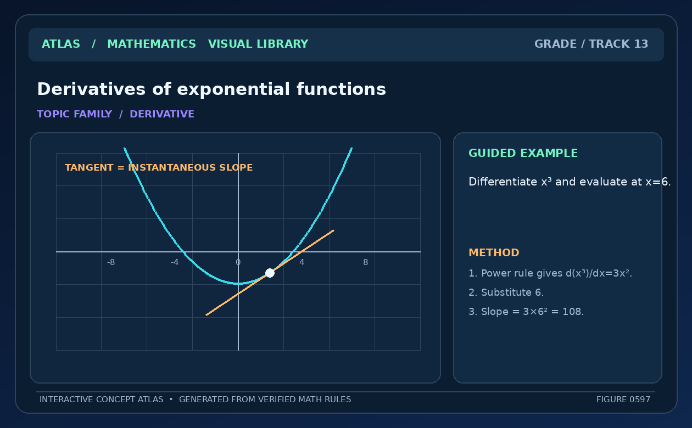
Differentiate x³ and evaluate at x=6.
- Power rule gives d(x³)/dx=3x².
- Substitute 6.
- Slope = 3×6² = 108.
Find derivative of x² at x=11.
Hint: Differentiate first: 2x.
Show answer and verify
22
Check the units, inputs and intermediate steps. Different solution methods may be valid.
Derivatives of logarithms
Derivatives of logarithms: Differentiate to find instantaneous rate of change and tangent-line slope. Check the applicable product, quotient, power and chain rules.
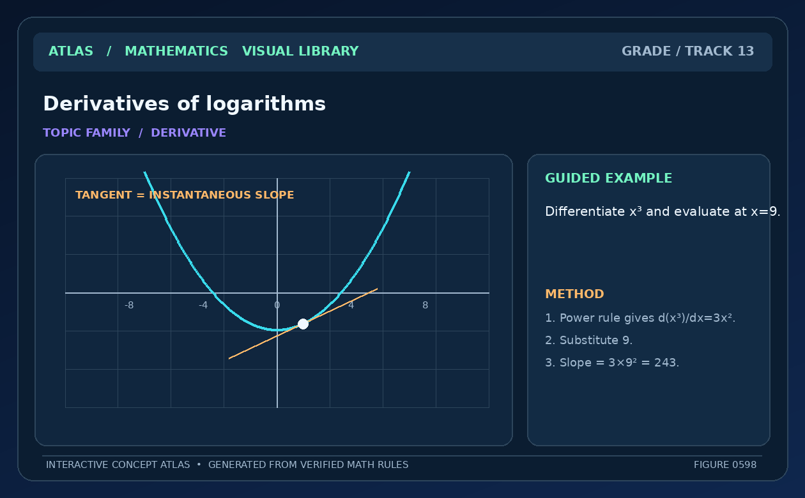
Differentiate x³ and evaluate at x=9.
- Power rule gives d(x³)/dx=3x².
- Substitute 9.
- Slope = 3×9² = 243.
Find derivative of x² at x=8.
Hint: Differentiate first: 2x.
Show answer and verify
16
Check the units, inputs and intermediate steps. Different solution methods may be valid.
Inverse trig derivatives
Inverse trig derivatives: Differentiate to find instantaneous rate of change and tangent-line slope. Check the applicable product, quotient, power and chain rules.
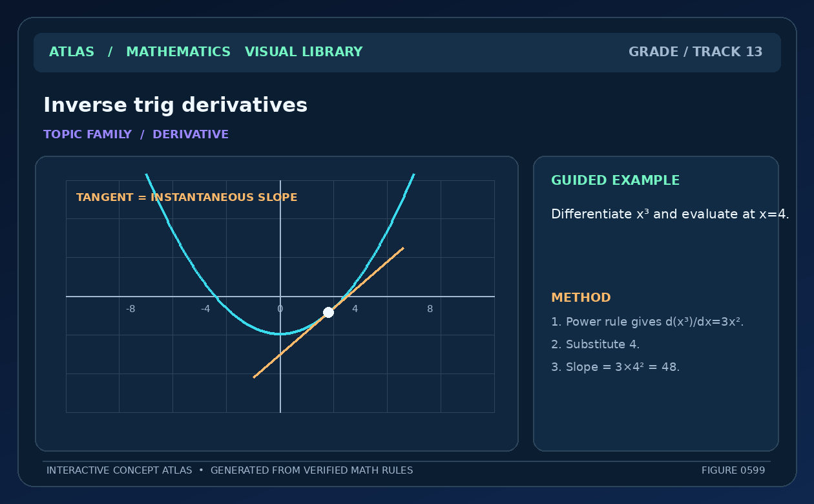
Differentiate x³ and evaluate at x=4.
- Power rule gives d(x³)/dx=3x².
- Substitute 4.
- Slope = 3×4² = 48.
Find derivative of x² at x=5.
Hint: Differentiate first: 2x.
Show answer and verify
10
Check the units, inputs and intermediate steps. Different solution methods may be valid.
Implicit differentiation
Implicit differentiation: Differentiate to find instantaneous rate of change and tangent-line slope. Check the applicable product, quotient, power and chain rules.
Differentiate x³ and evaluate at x=4.
- Power rule gives d(x³)/dx=3x².
- Substitute 4.
- Slope = 3×4² = 48.
Find derivative of x² at x=9.
Hint: Differentiate first: 2x.
Show answer and verify
18
Check the units, inputs and intermediate steps. Different solution methods may be valid.
Higher derivatives
Higher derivatives: Differentiate to find instantaneous rate of change and tangent-line slope. Check the applicable product, quotient, power and chain rules.
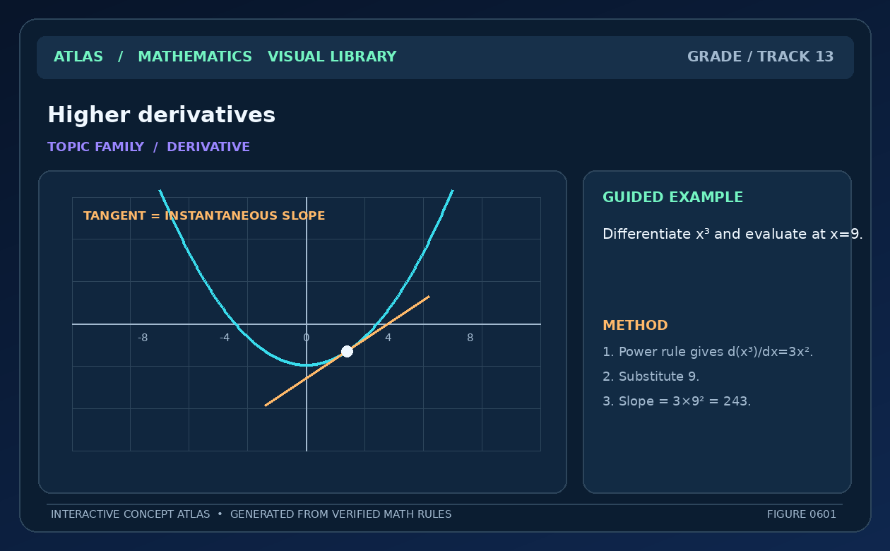
Differentiate x³ and evaluate at x=9.
- Power rule gives d(x³)/dx=3x².
- Substitute 9.
- Slope = 3×9² = 243.
Find derivative of x² at x=3.
Hint: Differentiate first: 2x.
Show answer and verify
6
Check the units, inputs and intermediate steps. Different solution methods may be valid.
Derivative of inverse functions
Derivative of inverse functions: Differentiate to find instantaneous rate of change and tangent-line slope. Check the applicable product, quotient, power and chain rules.
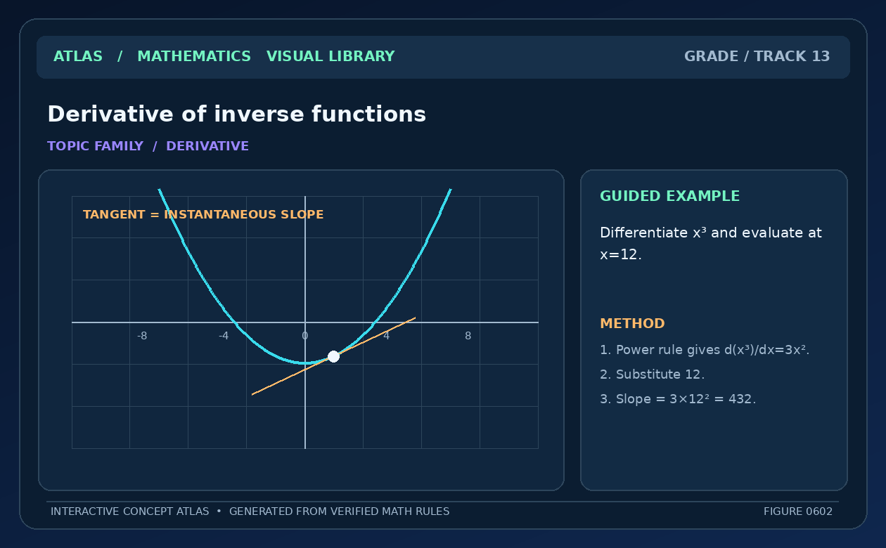
Differentiate x³ and evaluate at x=12.
- Power rule gives d(x³)/dx=3x².
- Substitute 12.
- Slope = 3×12² = 432.
Find derivative of x² at x=9.
Hint: Differentiate first: 2x.
Show answer and verify
18
Check the units, inputs and intermediate steps. Different solution methods may be valid.
Logarithmic differentiation
Logarithmic differentiation: Differentiate to find instantaneous rate of change and tangent-line slope. Check the applicable product, quotient, power and chain rules.
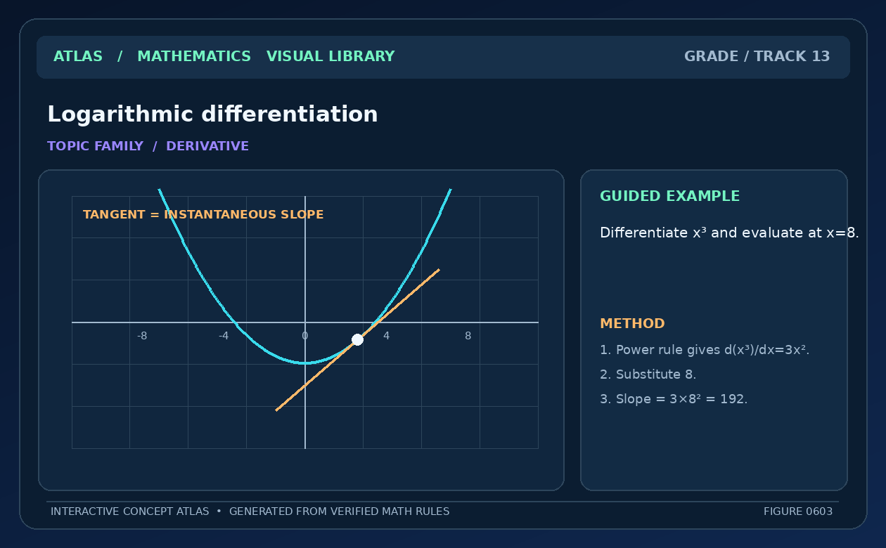
Differentiate x³ and evaluate at x=8.
- Power rule gives d(x³)/dx=3x².
- Substitute 8.
- Slope = 3×8² = 192.
Find derivative of x² at x=3.
Hint: Differentiate first: 2x.
Show answer and verify
6
Check the units, inputs and intermediate steps. Different solution methods may be valid.
Position velocity and acceleration
Position velocity and acceleration: Formulate the model, take its derivative, and interpret its units and critical points. A critical point may be a maximum, minimum, or neither.
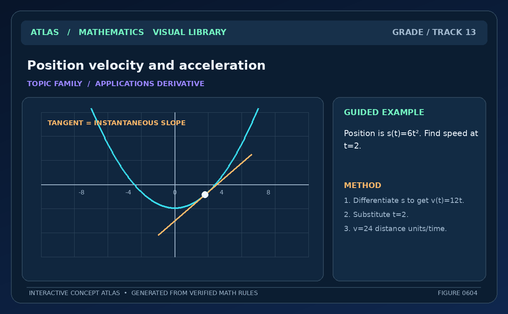
Position is s(t)=6t². Find speed at t=2.
- Differentiate s to get v(t)=12t.
- Substitute t=2.
- v=24 distance units/time.
For s(t)=5t², find velocity at t=2.
Hint: Velocity is the first derivative of position.
Show answer and verify
20
Check the units, inputs and intermediate steps. Different solution methods may be valid.
Marginal cost and revenue
Marginal cost and revenue: Formulate the model, take its derivative, and interpret its units and critical points. A critical point may be a maximum, minimum, or neither.
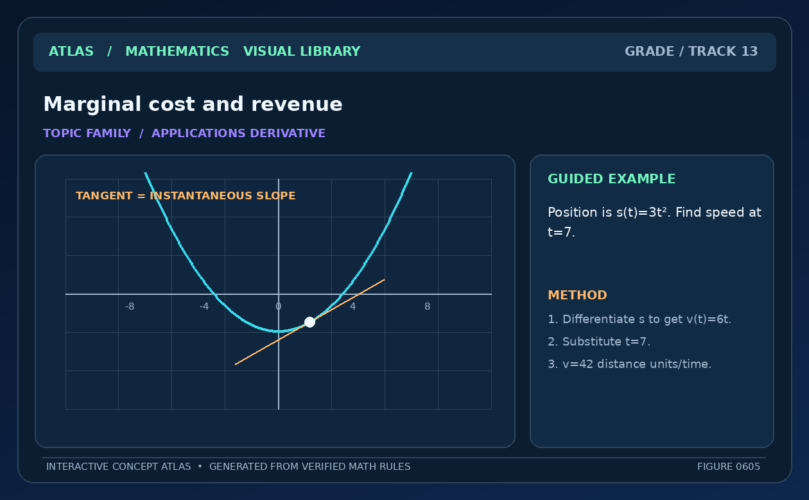
Position is s(t)=3t². Find speed at t=7.
- Differentiate s to get v(t)=6t.
- Substitute t=7.
- v=42 distance units/time.
For s(t)=5t², find velocity at t=7.
Hint: Velocity is the first derivative of position.
Show answer and verify
70
Check the units, inputs and intermediate steps. Different solution methods may be valid.
Optimization of area
Optimization of area: Formulate the model, take its derivative, and interpret its units and critical points. A critical point may be a maximum, minimum, or neither.
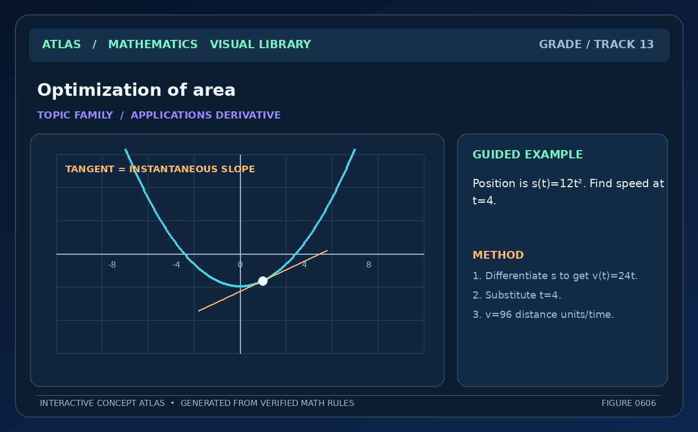
Position is s(t)=12t². Find speed at t=4.
- Differentiate s to get v(t)=24t.
- Substitute t=4.
- v=96 distance units/time.
For s(t)=7t², find velocity at t=4.
Hint: Velocity is the first derivative of position.
Show answer and verify
56
Check the units, inputs and intermediate steps. Different solution methods may be valid.
Optimization of volume
Optimization of volume: Formulate the model, take its derivative, and interpret its units and critical points. A critical point may be a maximum, minimum, or neither.
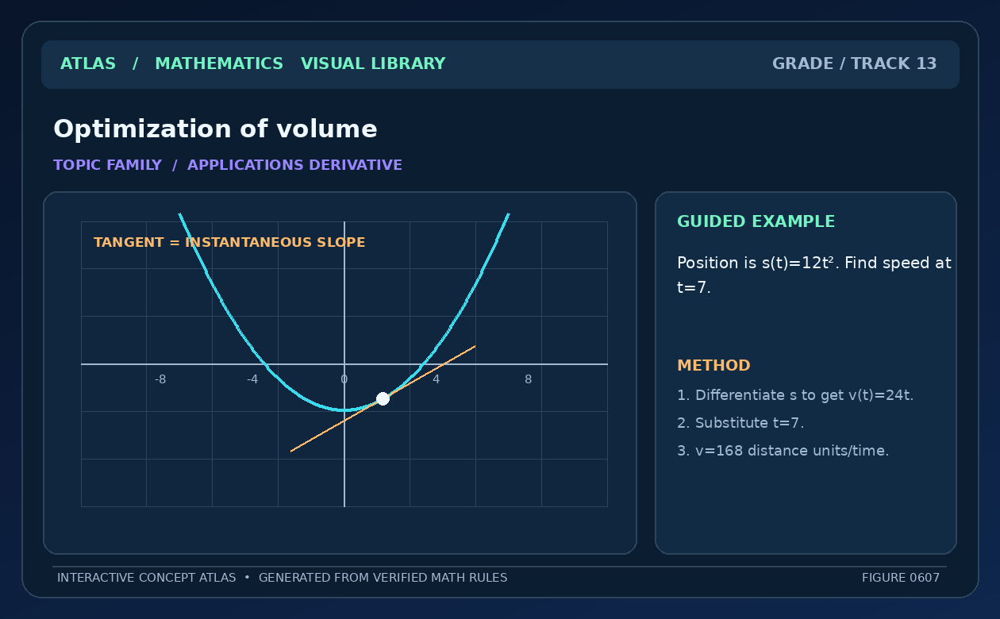
Position is s(t)=12t². Find speed at t=7.
- Differentiate s to get v(t)=24t.
- Substitute t=7.
- v=168 distance units/time.
For s(t)=8t², find velocity at t=7.
Hint: Velocity is the first derivative of position.
Show answer and verify
112
Check the units, inputs and intermediate steps. Different solution methods may be valid.
Related rates
Related rates: Formulate the model, take its derivative, and interpret its units and critical points. A critical point may be a maximum, minimum, or neither.
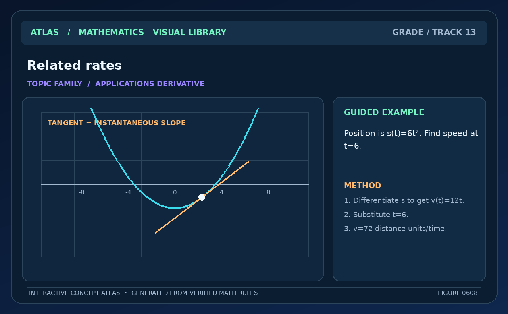
Position is s(t)=6t². Find speed at t=6.
- Differentiate s to get v(t)=12t.
- Substitute t=6.
- v=72 distance units/time.
For s(t)=2t², find velocity at t=6.
Hint: Velocity is the first derivative of position.
Show answer and verify
24
Check the units, inputs and intermediate steps. Different solution methods may be valid.
Linear approximation
Linear approximation: Formulate the model, take its derivative, and interpret its units and critical points. A critical point may be a maximum, minimum, or neither.
Position is s(t)=4t². Find speed at t=5.
- Differentiate s to get v(t)=8t.
- Substitute t=5.
- v=40 distance units/time.
For s(t)=5t², find velocity at t=5.
Hint: Velocity is the first derivative of position.
Show answer and verify
50
Check the units, inputs and intermediate steps. Different solution methods may be valid.
Differentials and error
Differentials and error: Formulate the model, take its derivative, and interpret its units and critical points. A critical point may be a maximum, minimum, or neither.
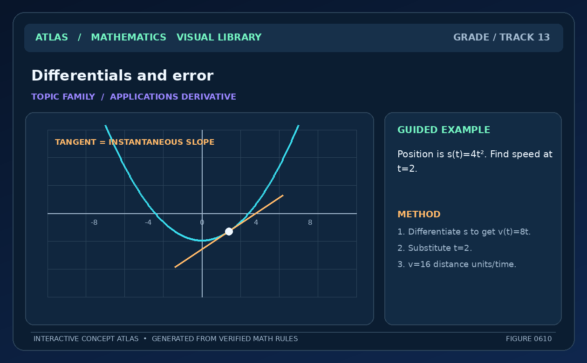
Position is s(t)=4t². Find speed at t=2.
- Differentiate s to get v(t)=8t.
- Substitute t=2.
- v=16 distance units/time.
For s(t)=9t², find velocity at t=2.
Hint: Velocity is the first derivative of position.
Show answer and verify
36
Check the units, inputs and intermediate steps. Different solution methods may be valid.
Mean value theorem
Mean value theorem: Formulate the model, take its derivative, and interpret its units and critical points. A critical point may be a maximum, minimum, or neither.
Position is s(t)=12t². Find speed at t=5.
- Differentiate s to get v(t)=24t.
- Substitute t=5.
- v=120 distance units/time.
For s(t)=6t², find velocity at t=5.
Hint: Velocity is the first derivative of position.
Show answer and verify
60
Check the units, inputs and intermediate steps. Different solution methods may be valid.
Rolle theorem
Rolle theorem: Formulate the model, take its derivative, and interpret its units and critical points. A critical point may be a maximum, minimum, or neither.
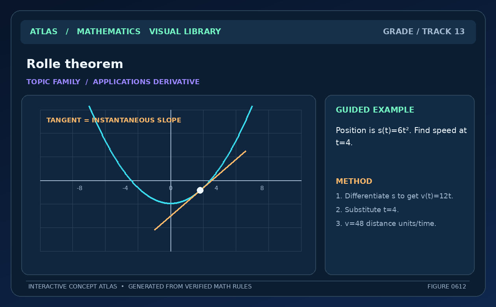
Position is s(t)=6t². Find speed at t=4.
- Differentiate s to get v(t)=12t.
- Substitute t=4.
- v=48 distance units/time.
For s(t)=11t², find velocity at t=4.
Hint: Velocity is the first derivative of position.
Show answer and verify
88
Check the units, inputs and intermediate steps. Different solution methods may be valid.
Critical points
Critical points: Formulate the model, take its derivative, and interpret its units and critical points. A critical point may be a maximum, minimum, or neither.
Position is s(t)=6t². Find speed at t=4.
- Differentiate s to get v(t)=12t.
- Substitute t=4.
- v=48 distance units/time.
For s(t)=6t², find velocity at t=4.
Hint: Velocity is the first derivative of position.
Show answer and verify
48
Check the units, inputs and intermediate steps. Different solution methods may be valid.
Local extrema
Local extrema: Formulate the model, take its derivative, and interpret its units and critical points. A critical point may be a maximum, minimum, or neither.
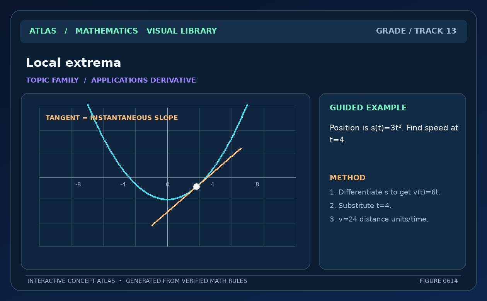
Position is s(t)=3t². Find speed at t=4.
- Differentiate s to get v(t)=6t.
- Substitute t=4.
- v=24 distance units/time.
For s(t)=9t², find velocity at t=4.
Hint: Velocity is the first derivative of position.
Show answer and verify
72
Check the units, inputs and intermediate steps. Different solution methods may be valid.
Absolute extrema on closed intervals
Absolute extrema on closed intervals: Formulate the model, take its derivative, and interpret its units and critical points. A critical point may be a maximum, minimum, or neither.
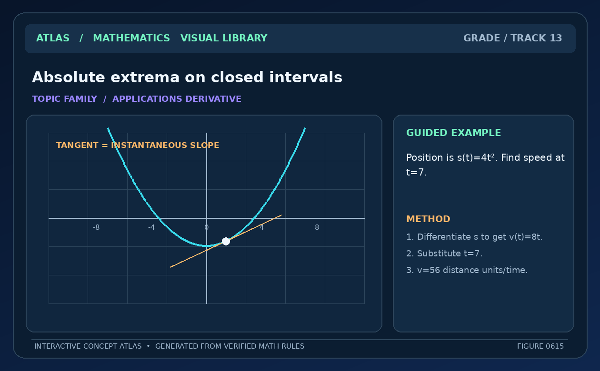
Position is s(t)=4t². Find speed at t=7.
- Differentiate s to get v(t)=8t.
- Substitute t=7.
- v=56 distance units/time.
For s(t)=6t², find velocity at t=7.
Hint: Velocity is the first derivative of position.
Show answer and verify
84
Check the units, inputs and intermediate steps. Different solution methods may be valid.
First derivative test
First derivative test: Formulate the model, take its derivative, and interpret its units and critical points. A critical point may be a maximum, minimum, or neither.
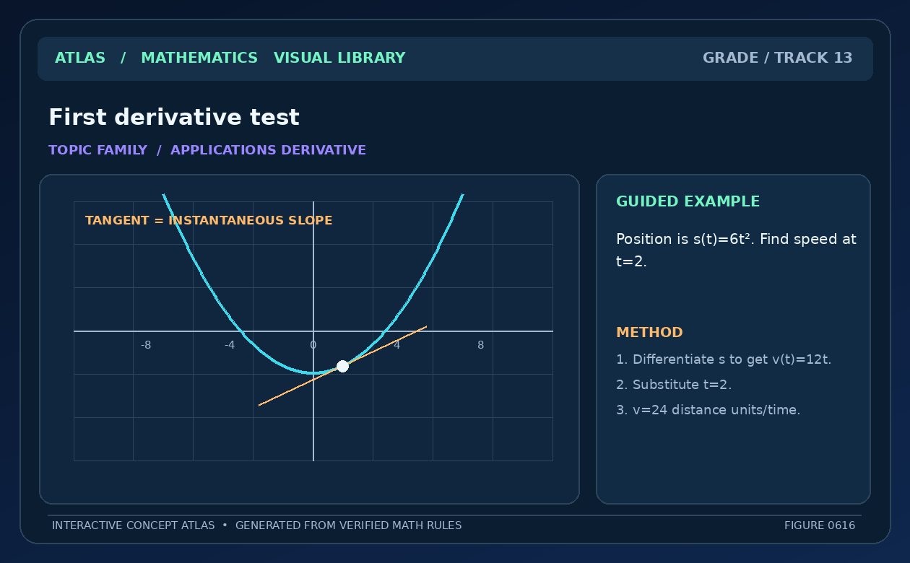
Position is s(t)=6t². Find speed at t=2.
- Differentiate s to get v(t)=12t.
- Substitute t=2.
- v=24 distance units/time.
For s(t)=9t², find velocity at t=2.
Hint: Velocity is the first derivative of position.
Show answer and verify
36
Check the units, inputs and intermediate steps. Different solution methods may be valid.
Second derivative test
Second derivative test: Formulate the model, take its derivative, and interpret its units and critical points. A critical point may be a maximum, minimum, or neither.
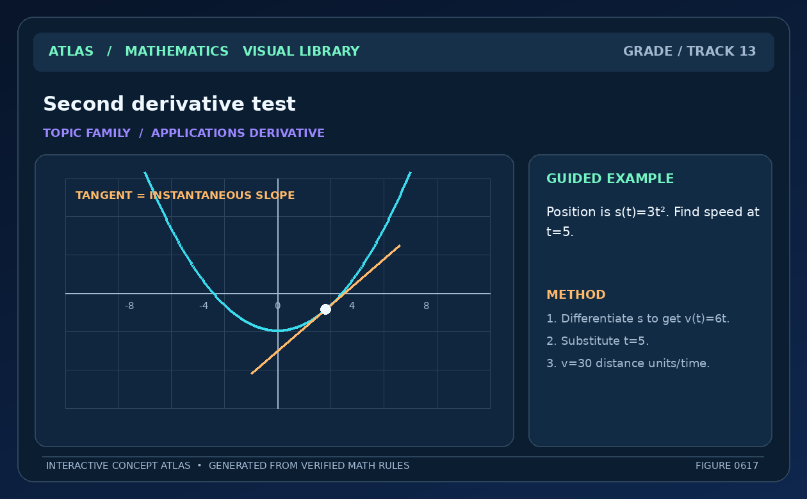
Position is s(t)=3t². Find speed at t=5.
- Differentiate s to get v(t)=6t.
- Substitute t=5.
- v=30 distance units/time.
For s(t)=5t², find velocity at t=5.
Hint: Velocity is the first derivative of position.
Show answer and verify
50
Check the units, inputs and intermediate steps. Different solution methods may be valid.
Concavity and inflection points
Concavity and inflection points: Formulate the model, take its derivative, and interpret its units and critical points. A critical point may be a maximum, minimum, or neither.
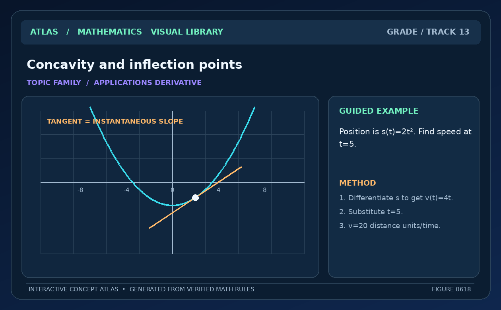
Position is s(t)=2t². Find speed at t=5.
- Differentiate s to get v(t)=4t.
- Substitute t=5.
- v=20 distance units/time.
For s(t)=7t², find velocity at t=5.
Hint: Velocity is the first derivative of position.
Show answer and verify
70
Check the units, inputs and intermediate steps. Different solution methods may be valid.
Curve sketching
Curve sketching: Formulate the model, take its derivative, and interpret its units and critical points. A critical point may be a maximum, minimum, or neither.
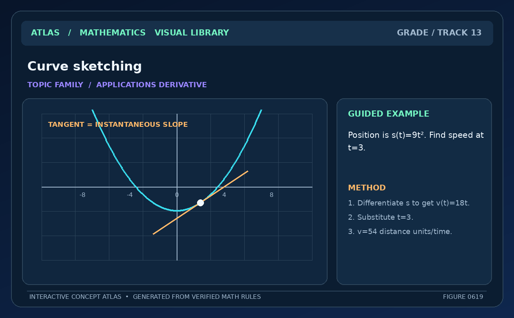
Position is s(t)=9t². Find speed at t=3.
- Differentiate s to get v(t)=18t.
- Substitute t=3.
- v=54 distance units/time.
For s(t)=3t², find velocity at t=3.
Hint: Velocity is the first derivative of position.
Show answer and verify
18
Check the units, inputs and intermediate steps. Different solution methods may be valid.
Newton method
Newton method: Formulate the model, take its derivative, and interpret its units and critical points. A critical point may be a maximum, minimum, or neither.
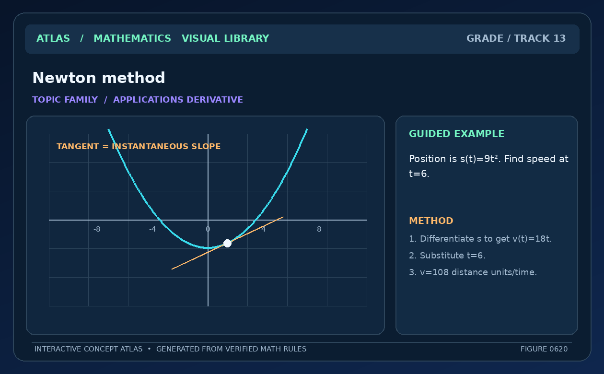
Position is s(t)=9t². Find speed at t=6.
- Differentiate s to get v(t)=18t.
- Substitute t=6.
- v=108 distance units/time.
For s(t)=11t², find velocity at t=6.
Hint: Velocity is the first derivative of position.
Show answer and verify
132
Check the units, inputs and intermediate steps. Different solution methods may be valid.
L Hopital rule
L Hopital rule: Formulate the model, take its derivative, and interpret its units and critical points. A critical point may be a maximum, minimum, or neither.
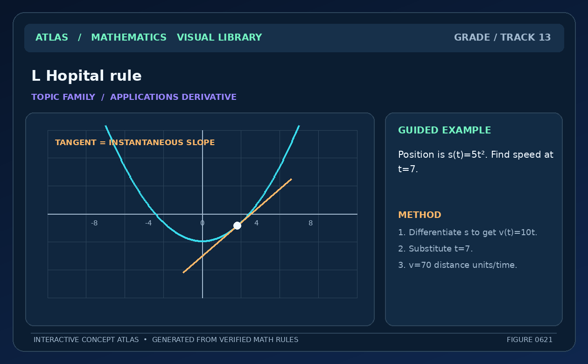
Position is s(t)=5t². Find speed at t=7.
- Differentiate s to get v(t)=10t.
- Substitute t=7.
- v=70 distance units/time.
For s(t)=5t², find velocity at t=7.
Hint: Velocity is the first derivative of position.
Show answer and verify
70
Check the units, inputs and intermediate steps. Different solution methods may be valid.
Riemann sums
Riemann sums: The definite integral represents signed accumulated change and can be approximated by Riemann sums. Differentiate an antiderivative to verify an indefinite-integral result.
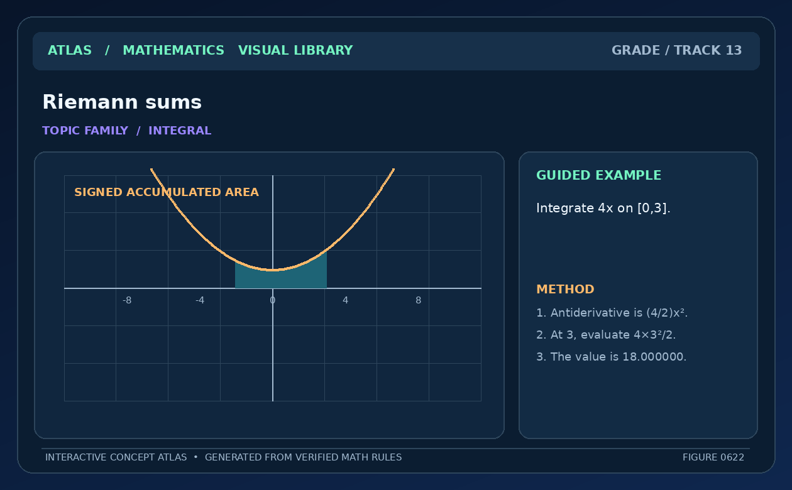
Integrate 4x on [0,3].
- Antiderivative is (4/2)x².
- At 3, evaluate 4×3²/2.
- The value is 18.000000.
Integrate 3x from 0 to 3.
Hint: Use ∫kx dx = kx²/2 and evaluate bounds.
Show answer and verify
13.5
Check the units, inputs and intermediate steps. Different solution methods may be valid.
Left right and midpoint sums
Left right and midpoint sums: The definite integral represents signed accumulated change and can be approximated by Riemann sums. Differentiate an antiderivative to verify an indefinite-integral result.
Integrate 9x on [0,5].
- Antiderivative is (9/2)x².
- At 5, evaluate 9×5²/2.
- The value is 112.500000.
Integrate 6x from 0 to 5.
Hint: Use ∫kx dx = kx²/2 and evaluate bounds.
Show answer and verify
75.0
Check the units, inputs and intermediate steps. Different solution methods may be valid.
Trapezoidal area estimates
Trapezoidal area estimates: The definite integral represents signed accumulated change and can be approximated by Riemann sums. Differentiate an antiderivative to verify an indefinite-integral result.
Integrate 7x on [0,2].
- Antiderivative is (7/2)x².
- At 2, evaluate 7×2²/2.
- The value is 14.000000.
Integrate 9x from 0 to 2.
Hint: Use ∫kx dx = kx²/2 and evaluate bounds.
Show answer and verify
18.0
Check the units, inputs and intermediate steps. Different solution methods may be valid.
Definite integral notation
Definite integral notation: The definite integral represents signed accumulated change and can be approximated by Riemann sums. Differentiate an antiderivative to verify an indefinite-integral result.
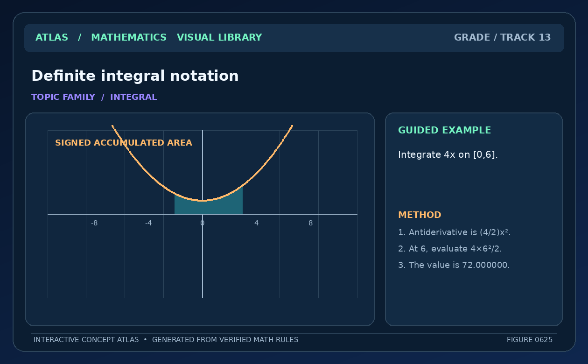
Integrate 4x on [0,6].
- Antiderivative is (4/2)x².
- At 6, evaluate 4×6²/2.
- The value is 72.000000.
Integrate 8x from 0 to 6.
Hint: Use ∫kx dx = kx²/2 and evaluate bounds.
Show answer and verify
144.0
Check the units, inputs and intermediate steps. Different solution methods may be valid.
Signed area and accumulation
Signed area and accumulation: The definite integral represents signed accumulated change and can be approximated by Riemann sums. Differentiate an antiderivative to verify an indefinite-integral result.
Integrate 4x on [0,2].
- Antiderivative is (4/2)x².
- At 2, evaluate 4×2²/2.
- The value is 8.000000.
Integrate 6x from 0 to 2.
Hint: Use ∫kx dx = kx²/2 and evaluate bounds.
Show answer and verify
12.0
Check the units, inputs and intermediate steps. Different solution methods may be valid.
Antiderivative basics
Antiderivative basics: The definite integral represents signed accumulated change and can be approximated by Riemann sums. Differentiate an antiderivative to verify an indefinite-integral result.
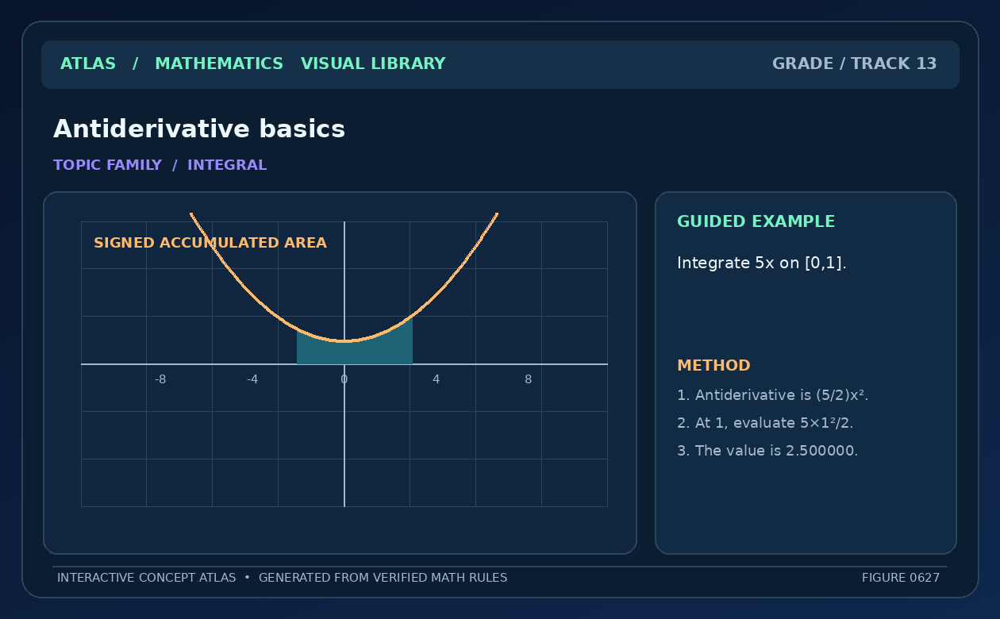
Integrate 5x on [0,1].
- Antiderivative is (5/2)x².
- At 1, evaluate 5×1²/2.
- The value is 2.500000.
Integrate 6x from 0 to 1.
Hint: Use ∫kx dx = kx²/2 and evaluate bounds.
Show answer and verify
3.0
Check the units, inputs and intermediate steps. Different solution methods may be valid.
Indefinite integral and constants
Indefinite integral and constants: The definite integral represents signed accumulated change and can be approximated by Riemann sums. Differentiate an antiderivative to verify an indefinite-integral result.
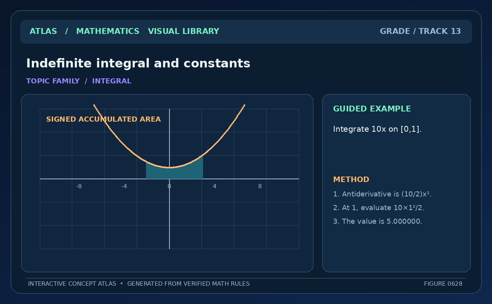
Integrate 10x on [0,1].
- Antiderivative is (10/2)x².
- At 1, evaluate 10×1²/2.
- The value is 5.000000.
Integrate 4x from 0 to 1.
Hint: Use ∫kx dx = kx²/2 and evaluate bounds.
Show answer and verify
2.0
Check the units, inputs and intermediate steps. Different solution methods may be valid.
Power-rule integration
Power-rule integration: The definite integral represents signed accumulated change and can be approximated by Riemann sums. Differentiate an antiderivative to verify an indefinite-integral result.
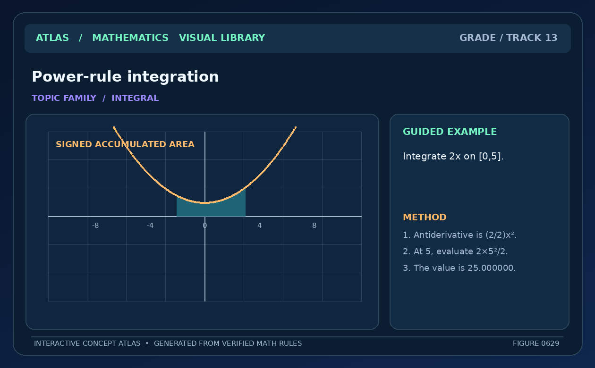
Integrate 2x on [0,5].
- Antiderivative is (2/2)x².
- At 5, evaluate 2×5²/2.
- The value is 25.000000.
Integrate 7x from 0 to 5.
Hint: Use ∫kx dx = kx²/2 and evaluate bounds.
Show answer and verify
87.5
Check the units, inputs and intermediate steps. Different solution methods may be valid.
Area between a curve and axis
Area between a curve and axis: The definite integral represents signed accumulated change and can be approximated by Riemann sums. Differentiate an antiderivative to verify an indefinite-integral result.
Integrate 4x on [0,5].
- Antiderivative is (4/2)x².
- At 5, evaluate 4×5²/2.
- The value is 50.000000.
Integrate 4x from 0 to 5.
Hint: Use ∫kx dx = kx²/2 and evaluate bounds.
Show answer and verify
50.0
Check the units, inputs and intermediate steps. Different solution methods may be valid.
Average value of a function
Average value of a function: The definite integral represents signed accumulated change and can be approximated by Riemann sums. Differentiate an antiderivative to verify an indefinite-integral result.
Integrate 9x on [0,5].
- Antiderivative is (9/2)x².
- At 5, evaluate 9×5²/2.
- The value is 112.500000.
Integrate 4x from 0 to 5.
Hint: Use ∫kx dx = kx²/2 and evaluate bounds.
Show answer and verify
50.0
Check the units, inputs and intermediate steps. Different solution methods may be valid.
Net change theorem
Net change theorem: The definite integral represents signed accumulated change and can be approximated by Riemann sums. Differentiate an antiderivative to verify an indefinite-integral result.
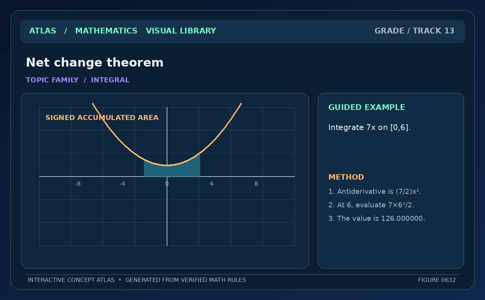
Integrate 7x on [0,6].
- Antiderivative is (7/2)x².
- At 6, evaluate 7×6²/2.
- The value is 126.000000.
Integrate 4x from 0 to 6.
Hint: Use ∫kx dx = kx²/2 and evaluate bounds.
Show answer and verify
72.0
Check the units, inputs and intermediate steps. Different solution methods may be valid.
Fundamental theorem of calculus I
Fundamental theorem of calculus I: Use a valid antiderivative and subtract the lower-endpoint value from the upper-endpoint value. The fundamental theorem connects accumulation and differentiation.
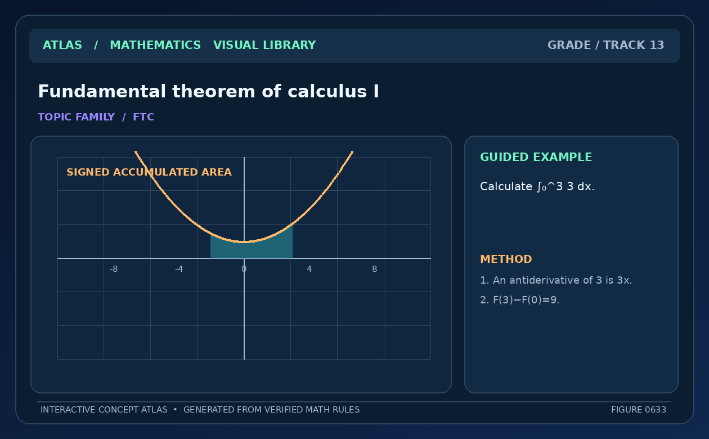
Calculate ∫₀^3 3 dx.
- An antiderivative of 3 is 3x.
- F(3)−F(0)=9.
Calculate ∫₀^4 11 dx.
Hint: Constant-height rectangle has area height × width.
Show answer and verify
44
Check the units, inputs and intermediate steps. Different solution methods may be valid.
Fundamental theorem of calculus II
Fundamental theorem of calculus II: Use a valid antiderivative and subtract the lower-endpoint value from the upper-endpoint value. The fundamental theorem connects accumulation and differentiation.
Calculate ∫₀^6 12 dx.
- An antiderivative of 12 is 12x.
- F(6)−F(0)=72.
Calculate ∫₀^7 10 dx.
Hint: Constant-height rectangle has area height × width.
Show answer and verify
70
Check the units, inputs and intermediate steps. Different solution methods may be valid.
Definite integrals from antiderivatives
Definite integrals from antiderivatives: Use a valid antiderivative and subtract the lower-endpoint value from the upper-endpoint value. The fundamental theorem connects accumulation and differentiation.
Calculate ∫₀^6 12 dx.
- An antiderivative of 12 is 12x.
- F(6)−F(0)=72.
Calculate ∫₀^7 2 dx.
Hint: Constant-height rectangle has area height × width.
Show answer and verify
14
Check the units, inputs and intermediate steps. Different solution methods may be valid.
Accumulation functions
Accumulation functions: Use a valid antiderivative and subtract the lower-endpoint value from the upper-endpoint value. The fundamental theorem connects accumulation and differentiation.
Calculate ∫₀^5 12 dx.
- An antiderivative of 12 is 12x.
- F(5)−F(0)=60.
Calculate ∫₀^6 8 dx.
Hint: Constant-height rectangle has area height × width.
Show answer and verify
48
Check the units, inputs and intermediate steps. Different solution methods may be valid.
Substitution introduction
Substitution introduction: Use a valid antiderivative and subtract the lower-endpoint value from the upper-endpoint value. The fundamental theorem connects accumulation and differentiation.
Calculate ∫₀^6 10 dx.
- An antiderivative of 10 is 10x.
- F(6)−F(0)=60.
Calculate ∫₀^7 3 dx.
Hint: Constant-height rectangle has area height × width.
Show answer and verify
21
Check the units, inputs and intermediate steps. Different solution methods may be valid.
Continuous interest derivatives
Continuous interest derivatives: Convert a percentage to a decimal and write down the compounding period before computing. A loan APR and an investment APY are not automatically interchangeable.
Calculate one year of simple interest on $400 at 6% APR.
- Convert rate to 0.06.
- Interest = 400×0.06×1.
- Earn $24.00.
Interest on $700 at 6% for one year?
Hint: Simple interest is principal × annual rate × time.
Show answer and verify
42
Check the units, inputs and intermediate steps. Different solution methods may be valid.
Marginal financial rates of change
Marginal financial rates of change: Convert a percentage to a decimal and write down the compounding period before computing. A loan APR and an investment APY are not automatically interchangeable.
Calculate one year of simple interest on $500 at 5% APR.
- Convert rate to 0.05.
- Interest = 500×0.05×1.
- Earn $25.00.
Interest on $700 at 5% for one year?
Hint: Simple interest is principal × annual rate × time.
Show answer and verify
35
Check the units, inputs and intermediate steps. Different solution methods may be valid.